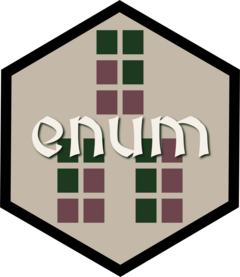

Changelog
enum 0.0.1
- The core enumeration algorithms have been rewritten in C, yielding large speed improvements for all grid and graph partition functions.
- Polyomino generation (
grow_ominos) has been rewritten in C with an open-addressed hash set for deduplication, eliminating the bottleneck for cases with large or widely-spaced allowed sizes (e.g.exact_sizes = c(5, 15)on a 5×5 grid now takes seconds rather than hours). -
enum_partitions(),enum_count_partitions(),enum_partitions_graph(), andenum_count_partitions_graph()gain anexact_sizesargument. Pass an integer vector of allowed part sizes (e.g.exact_sizes = c(4, 8)) instead of amin_size/max_sizerange. This is useful when part sizes must satisfy a specific integer relationship, such as parts of sizekand2k. -
enum_partitions()andenum_partitions_graph()gain aprogressargument (defaultTRUE). A progress bar powered by the cli C API is displayed during enumeration, updating from within the C backtracking loop. Interrupt support (R_CheckUserInterrupt) is also present throughout the C code. -
enum_partitions()andenum_partitions_graph()gain afileargument. When provided, partitions are streamed to a binary file instead of returned as a matrix, enabling enumeration of large cases that would otherwise exhaust memory. - New
enum_read_partitions()reads a binary file written byenum_partitions()orenum_partitions_graph(). Theskipandnarguments allow reading arbitrary subsets without loading the full file into memory.